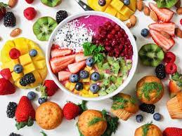

Ensalada de Jicama
This baked desert called Food for the Gods is made out of dates and walnuts mixed in a fluffy buttery dough, the texture is simply phenomenal think of it as a cross between a moist butterscotch crossed with crumby cookie.

Kalamay Hati
Kalamay Hati is a Filipino rice cake prepared with glutinous rice flour, coconut milk and sugar cooked in a large pan while continuously mixing until it becomes thick and dense until it holds it shape. Once cooked it is topped with latik, a coconut milk curd.

Camote Delight
Camote Delight is a Filipino snack/dessert recipe prepared with sweet potatoes mixed and cooked with cream and condensed milk.